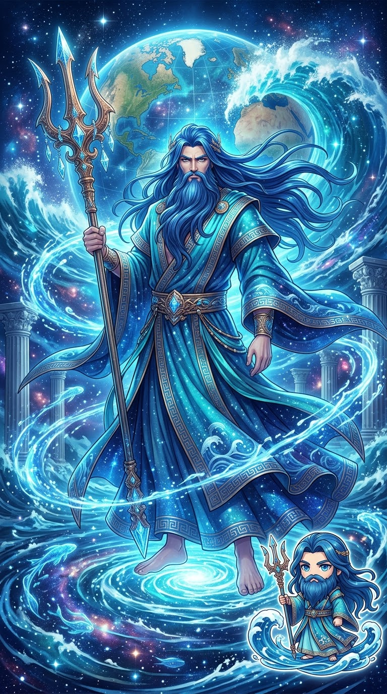
TITAN 01
Ὠκεανός｜俄刻阿諾斯｜Oceanus
大洋之泰坦
代表環繞世界的宇宙大洋。 在希臘神話中，他是十二位第一代泰坦之一， 也是眾多河流與水域神祇的祖先。
THE FIRST GENERATION OF TITANS
在原初神祇之後誕生的強大神族， 他們曾經統治天地，並成為後世眾神的重要源頭。
TITANS
根據赫西俄德《神譜》的記載， 原初神蓋亞與烏拉諾斯所生的十二位泰坦神， 構成了早期希臘神話的重要神族。

TITAN 01
大洋之泰坦
代表環繞世界的宇宙大洋。 在希臘神話中，他是十二位第一代泰坦之一， 也是眾多河流與水域神祇的祖先。
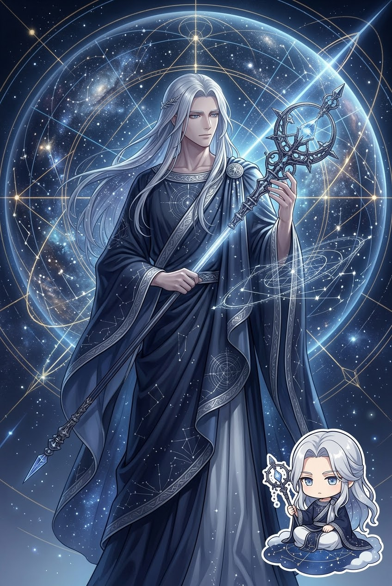
TITAN 02
天界智慧與軸心的泰坦
第一代泰坦之一，與福柏結合， 生下勒托與阿斯忒里亞， 因此成為後世重要神祇血脈的祖先。
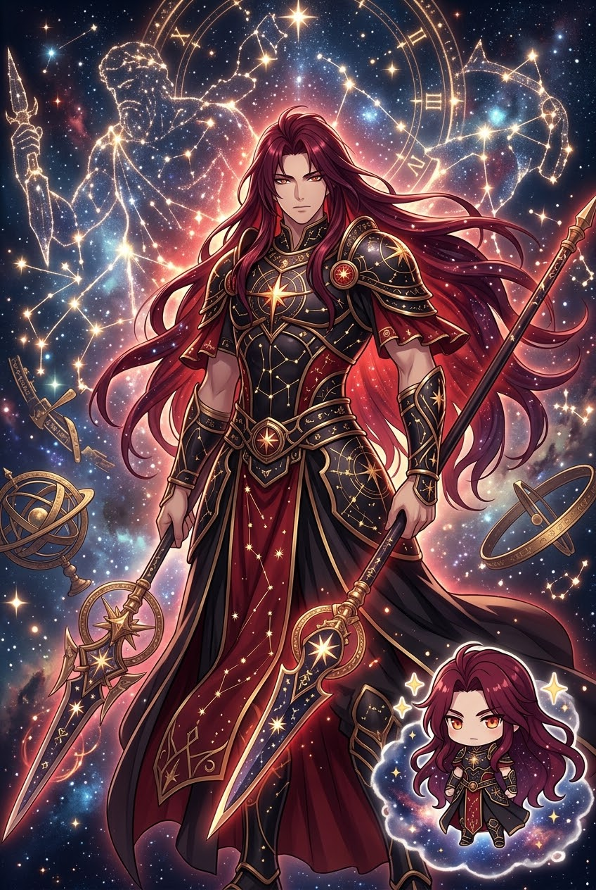
TITAN 03
天界秩序的泰坦
十二位第一代泰坦之一。 他與厄律比亞結合， 後代包括阿斯特賴俄斯、帕拉斯與珀耳塞斯。
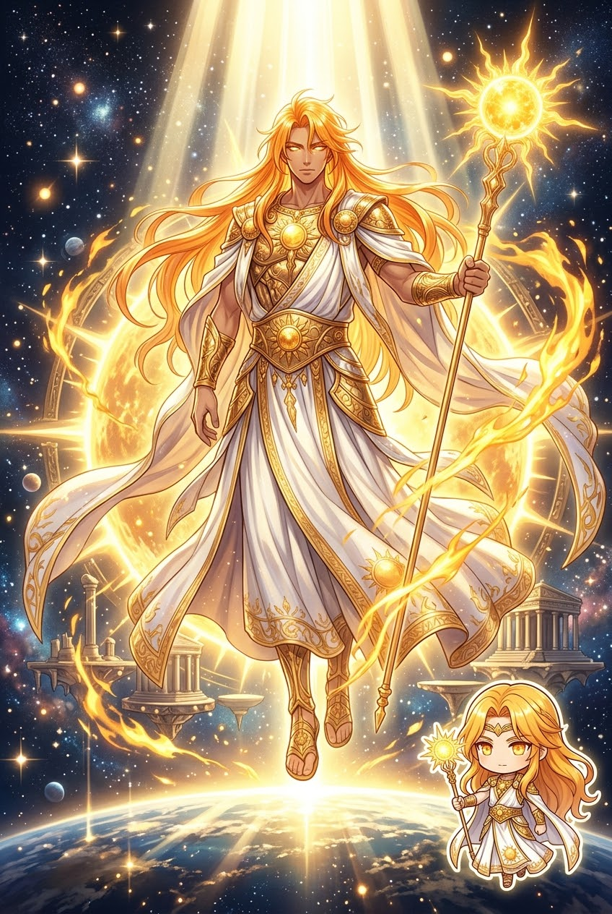
TITAN 04
天光之泰坦
與忒伊亞結合，生下赫利俄斯、塞勒涅與厄俄斯。 因此他的神族血脈與太陽、月亮以及黎明密切相關。
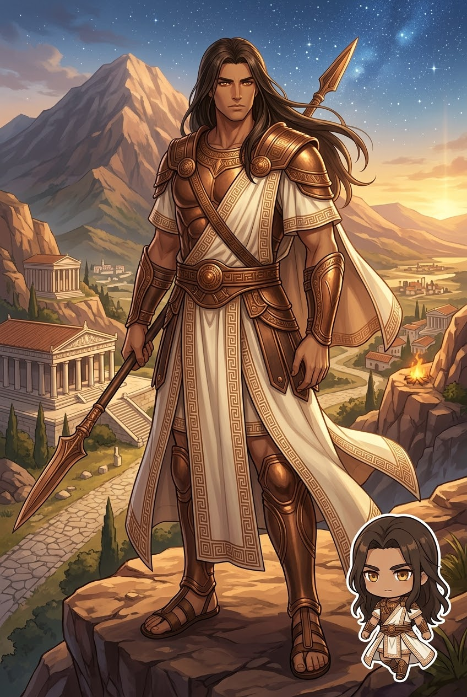
TITAN 05
人類命運與生命界限的泰坦
第一代泰坦之一。 他的後代包括阿特拉斯、普羅米修斯、 厄庇墨透斯與墨諾提俄斯， 對後世人類神話具有重要影響。
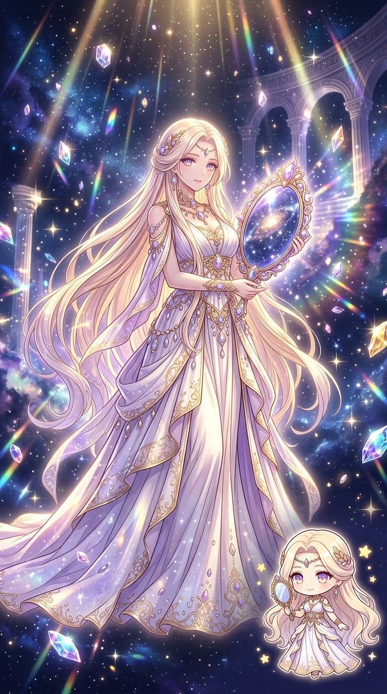
TITAN 06
光輝與天光之泰坦
與許珀里翁結合， 生下太陽赫利俄斯、月亮塞勒涅與黎明厄俄斯。 她的名字本身也與神聖光輝有所關聯。
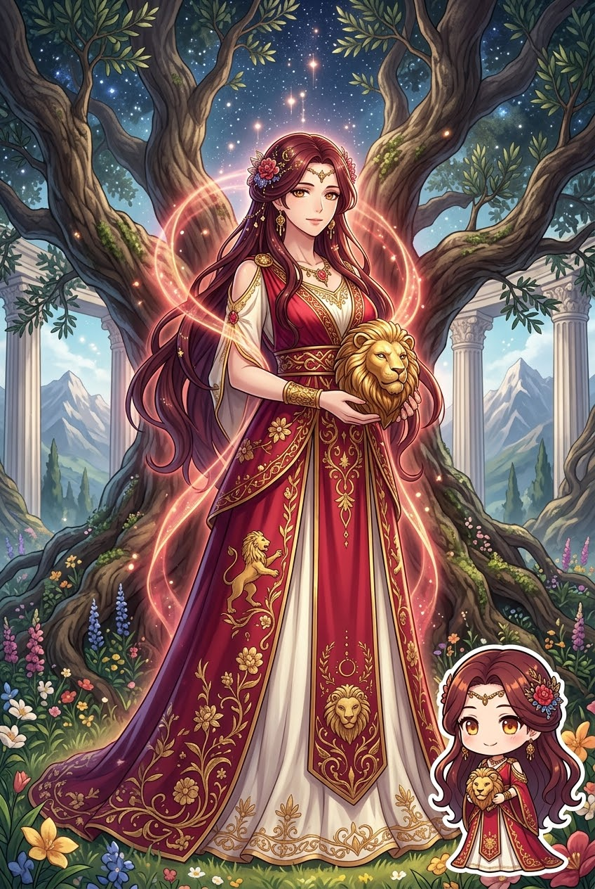
TITAN 07
泰坦母神
克洛諾斯的姊妹與妻子， 也是宙斯、赫拉、波賽頓、哈帝斯、 德墨忒耳與赫斯提亞的母親。
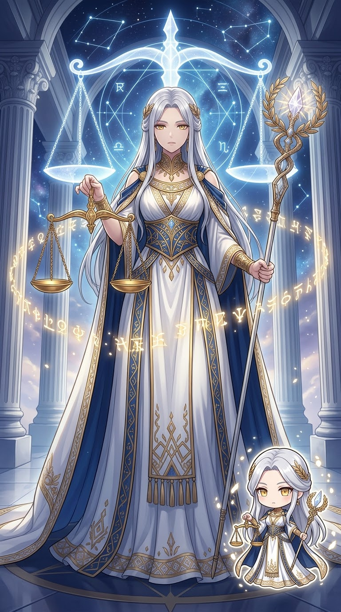
TITAN 08
神聖秩序與正義的泰坦
象徵神聖的秩序、習俗與規範。 在後來的神話中，她也與預言及神諭傳統有所聯繫。
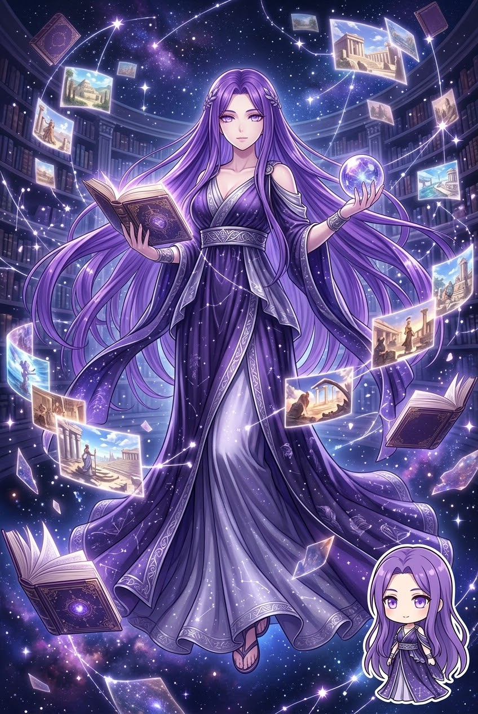
TITAN 09
記憶之泰坦
記憶的女神。 她與宙斯結合後生下九位繆思女神， 因此與詩歌、藝術、音樂與知識的傳承密切相關。
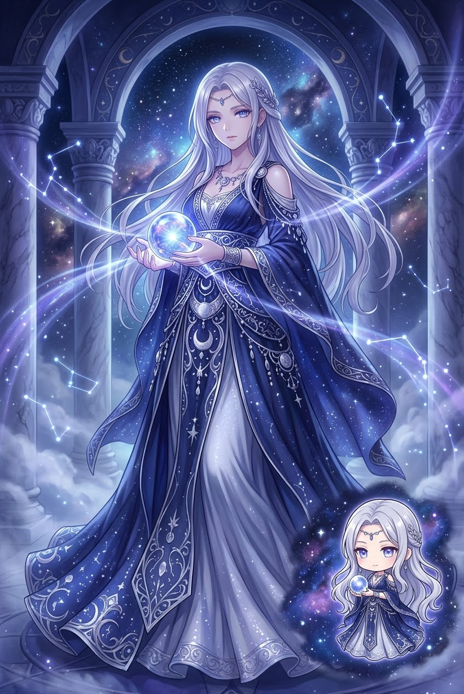
TITAN 10
光輝與神諭之泰坦
科俄斯的妻子。 她與阿波羅、阿耳忒彌斯的神族血脈有所連結， 也與古老的神諭傳統相關。
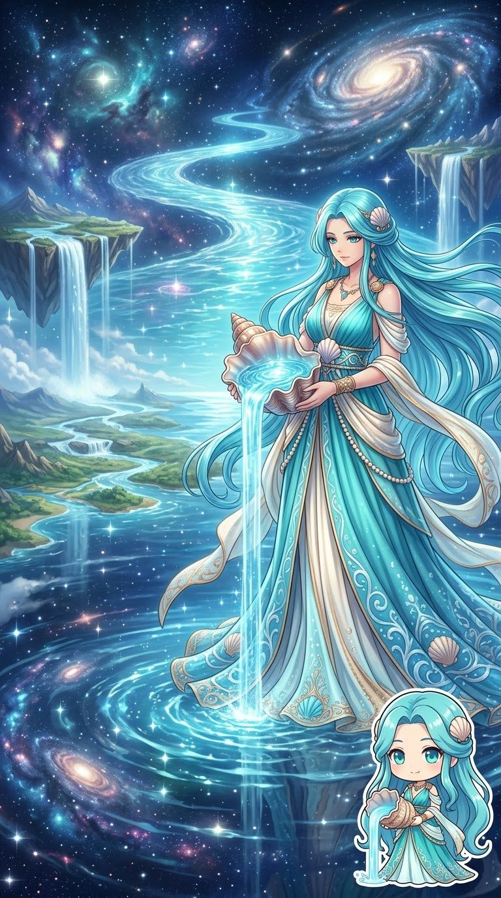
TITAN 11
淡水與河流之泰坦
俄刻阿諾斯的姊妹與妻子。 她與俄刻阿諾斯生下大量河神與海洋水神， 因此在神話中的水域神族具有重要地位。
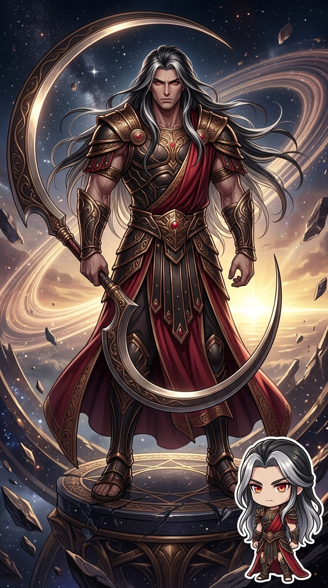
TITAN 12
泰坦之王
十二位泰坦中最年幼者。 他推翻父親烏拉諾斯並成為統治者， 後來又被自己的兒子宙斯推翻， 開啟奧林匹斯諸神的新時代。
THE NEXT GENERATION
泰坦神的血脈延續至下一代， 並孕育出後來希臘神話中最重要的眾多神祇。
探索泰坦後裔 →